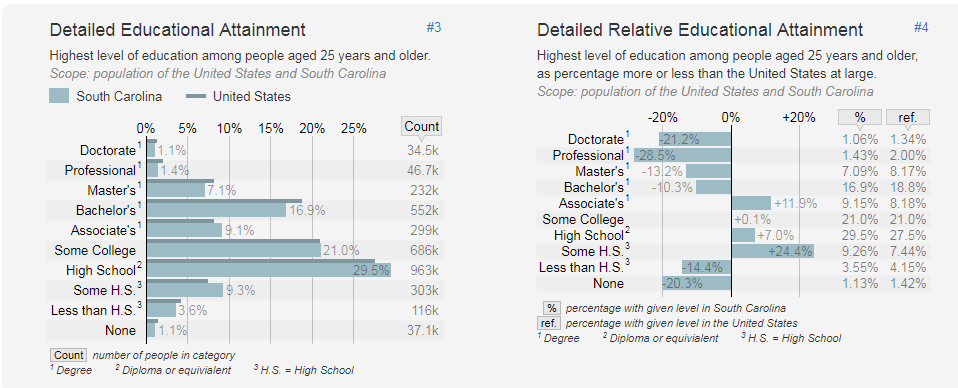

To say that South Carolina is lacking in the education department would be a severe understatement; not only was South Carolina ranked dead last (50th; Washington, D.C. was not included in the survey) in a 2017 U.S. News & World Report study, but South Carolina also ranks low in overall political activism. A low rank in political activism along with already deplorable educational systems means that education will be below average for a considerable duration of time as of right now.
To read more about South Carolina placing 50th in education, check out this article: Post and Courier: "South Carolina Ranks Last in Education in U.S. News & World Report Study"
Furthermore, in addition to the low quality of South Carolina education, the highest level of education achieved by South Carolina residents is poor compared to the remainder of the United States. While it is important to concede that there is a smaller percentage of people in South Carolina who did not graduate high school compared to the nation, it should be noted that there are less people who earned college degrees, with a rate over 20% lower relative to the nation for both doctorate and professional degrees. Speaking for South Carolinians alone, the most common highest level of education attained was high school.
